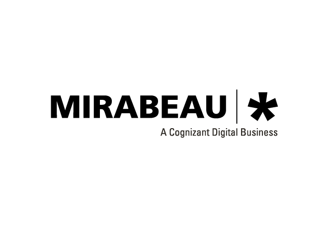
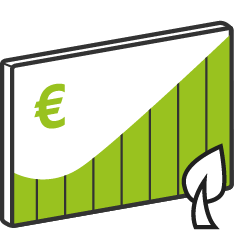
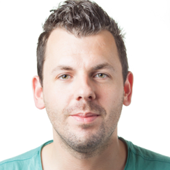
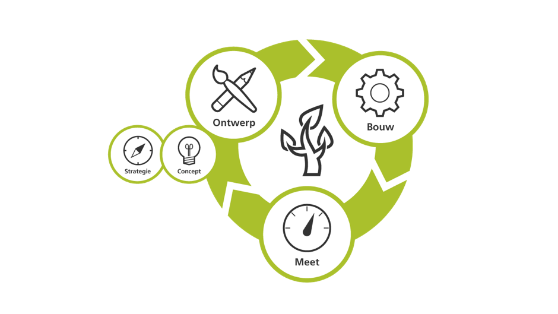
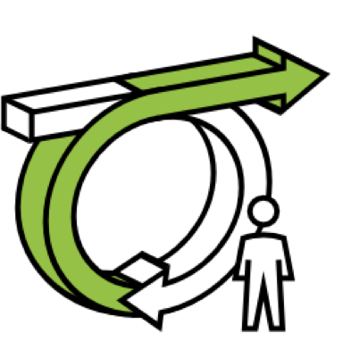
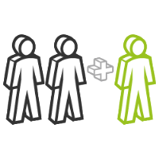
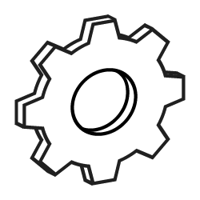

Over de stage
Van alle bedrijven waar ik een sollicitatie naar heb verstuurd, was Mirabeau de laatste waar ik terecht verwachtte te komen. Te groot dacht ik. Te professioneel dacht ik. Wat moeten zij met een CMD student zonder een tastbaar portfolio gevuld met de beste werken? Het was de interesse in data-driven design die ons samenbracht. In mijn jaren als online marketeer liep ik continu tegen hetzelfde probleem aan: top campagnes, slechte on page conversie. Stugge klanten bij wie er weken voorbij gingen voordat een kleine aanpassing gedaan kon worden. Dit moest en kon anders vond ik. Dit was dan ook de insteek van mijn stage bij Mirabeau. Doordat Rémon van den Bergh zichzelf herkende in mijn verhaal ben ik hier terecht gekomen. Gelukkig, want de afgelopen maanden waren top.
Mirabeau

Mirabeau is een digital agency die exact weet wat er online speelt. Sinds 2001 voorziet het bedrijf klanten van high-end digitale platformen. Deze klanten zijn voornamelijk marktleiders in wat zij doen. Enkele voorbeelden zijn: Air France-KLM, G-Star, Campina en Fleurop. Mirabeau zorgt er middels een agile werkwijze voor dat deze opdrachtgevers op een hoog tempo in kunnen spelen op de steeds veranderende klantvraag.
Werkzaamheden

Gedurende de stage heb ik aan verschillende projecten meegewerkt. Dit waren zowel interne projecten als projecten voor klanten. Ik heb getracht een variatie te zoeken in het type werkzaamheden. Uiteindelijk zijn de meeste werkzaamheden vanuit mijn functie als digital-analist gedaan. Er zitten echter een aantal werkzaamheden tussen die ik als front-ender heb aangepakt. Deze werkzaamheden worden in dit hoofdstuk besproken.
Stagebegeleider

Rémon van den Bergh is Lead Insights & Senior UX Researcher. Hij is sinds dit jaar vijf jaar werkzaam bij Mirabeau. En heeft al vele grote klanten voorbij zien komen. Hij geeft onder andere leiding aan een team met data analisten en begeleidt Interaction Designers met het betrekken van eindgebruikers in het concept & design proces.
Observatieopdrachten
Het doel van de observatieopdrachten is het krijgen van een inzicht in de bedrijfsvoering van Mirabeau. Onderstaand de drie observatieopdrachten waar ik mij tijdens de stage mee bezig heb gehouden.
Van begin tot eind

Tijdens mijn stage heb ik verschillende producten tot stand zien komen. Van pitch tot aan de oplevering. In de observatieopdracht heb ik het over ‘eind’. Eigenlijk spreken ze hier niet van een einde. Mirabeau wil klanten aan zich binden om hen zo altijd van dienst te kunnen zijn. KLM is bijvoorbeeld al jaren klant en voor hen zijn al vele producten opgeleverd. Deze producten zijn aan continue verandering onderhevig. Het proces kan je dan eigenlijk ook in een doorlopende cyclus weergeven. Zie onderstaande afbeelding.
Agile werken

Mirabeau ziet zichzelf als een agile transitioner. Dit wil zeggen dat zij klanten helpen met agile te worden. Maar is Mirabeau zelf wel zo agile als dat zij denkt? Ik heb het niet zo ervaren. Als het gaat om dingen gedaan krijgen komt de oude bureaucratie toch wel naar boven. Een voorbeeld hiervan is het regelen van de licenties voor Corbion. Ik geloof dat het een week geduurd heeft voordat deze eindelijk afgesloten werden. Dit komt doordat het langs een aantal verschillende mensen moet voordat het goedgekeurd wordt. Dit terwijl er flinke haast bij was, omdat de klant al geruime tijd wachtte. Ook moest de aanschaf direct verantwoord worden. Er wordt geen euro uitgegeven voordat er een paar tegenover staan. Dit vind ik jammer. Soms moet je gewoon investeren of het nou wat oplevert of niet. De kleinste investeringen kunnen tot de grootste opdrachten leiden.
Van prospect tot klant

Een klant kan op twee manieren bij Mirabeau terecht komen. De klant belt Mirabeau met een vraag of Mirabeau gaat zelf de markt op. In het tweede geval is men opzoek naar klanten die zich bevinden in de sectoren finance, travel, retail of business to business. Wanneer er een klant zelf belt wordt er allereerst gekeken of deze zich in één van deze sectoren bevindt. Als dit niet zo is, wordt er gekeken of de klant alsnog van toegevoegde waarde kan zijn.
Leerdoelen
Voor het begin van de stage heb ik een drietal leerdoelen opgesteld. Gedurende de stage heb ik geprobeerd om zoveel mogelijk aan deze leerdoelen te werken. De leerdoelen staan hieronder weergegeven.
Coderen

Dit leerdoel is anders gelopen dan verwacht. Dit komt voornamelijk doordat mijn werk als digital-analist meer tijd in beslag nam dan verwacht. Desalniettemin heb ik mijn best gedaan om toch zoveel mogelijk aan mijn front-end vaardigheden te werken. Ik heb, zoals in de werkzaamheden beschreven, kennis gemaakt met Google Charts en Gulp.
Onderzoeken
Net als leerdoel 1 is het doen van onderzoek ook anders gelopen dan gepland. Voor het vooraf bedachte onderzoek was niet genoeg ruimte vanwege de werkzaamheden als analist. Wel heb ik andere onderwerpen onderzocht. Denk hierbij aan het gebied van SEO dat ik voor Corbion onderzocht heb. Dit bestond uit het doen van uitvoerig desk-research. De opgedane kennis heb ik ook meteen toegepast in de SEO audit.
Communiceren
Ik verwachtte niet veel in contact te staan met klanten. Dit bleek echter wel het geval te zijn en ik ben Mirabeau dan ook dankbaar voor die kans. Ik had nooit verwacht dat ik in gesprek zou gaan met klanten als Frieslandcampina en Fleurop. Als stagiair heb ik mij actief opgesteld in de gesprekken met deze klanten. Dit werd naar mijn inziens ook gewaardeerd.